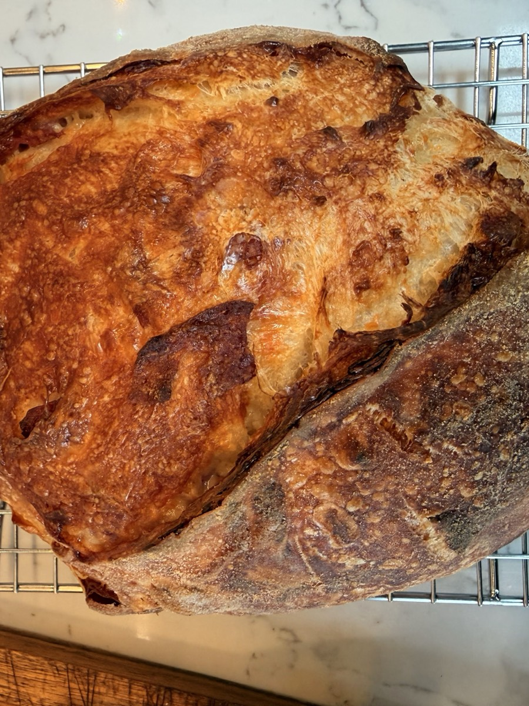
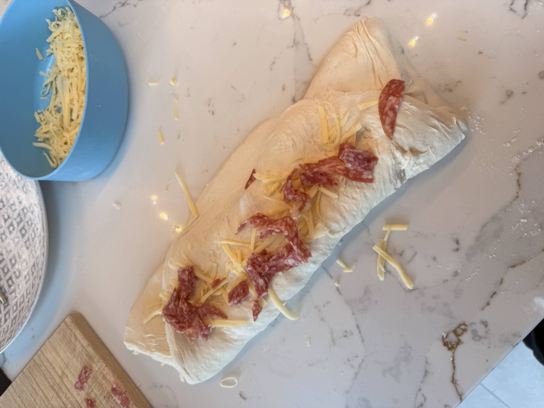
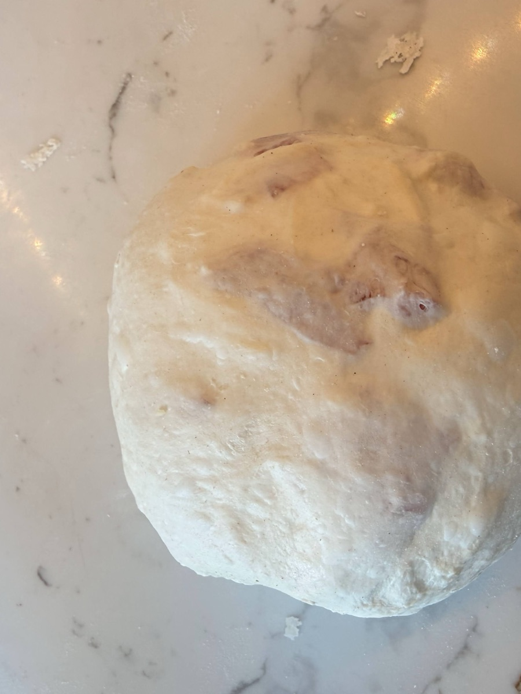
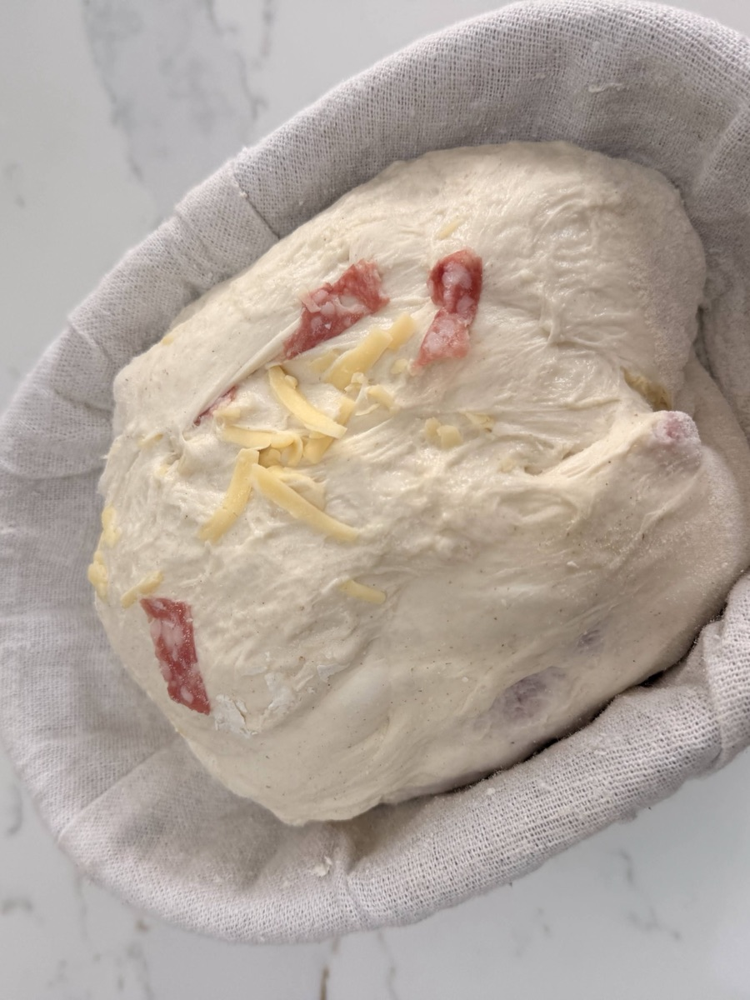
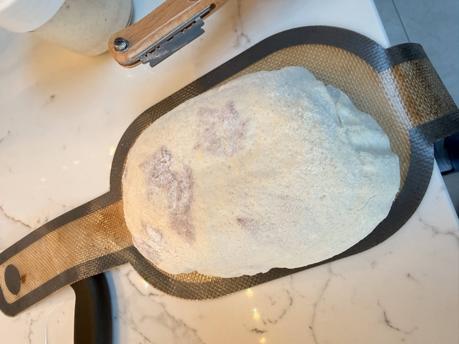
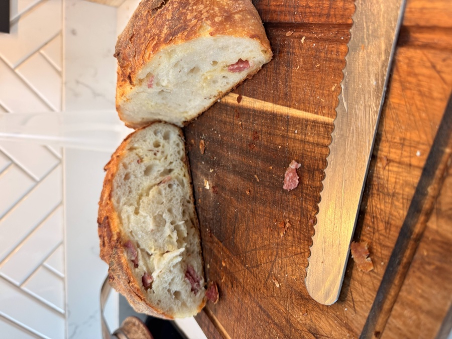

Salami and Cheese Sourdough - How to Add Inclusions to Your Loaf
Once the basic loaf feels like second nature, inclusions are the natural next step. You fold extras - cheese, cured meat, olives, whatever you like - directly into the dough at shaping. The technique takes a couple of minutes to learn and opens up a lot of possibilities. This version uses 100g grated hard cheese and 100g sliced salami, folded in before the cold proof. The result is a proper savoury loaf - salty, rich, and good enough to eat on its own.

Ingredients (for 1 Loaf)
- 100-125g active sourdough starter
- 170g lukewarm water (approx. 35-40°C / 95-104°F)
- 280g strong white bread flour
- 5g fine sea salt
- 100g hard cheese, grated from a block
- 100g salami, sliced and roughly torn into pieces
Method
The base method is the same as the classic recipe - the only new thing is how you incorporate the inclusions at shaping. If you want video guides for stretch and folds or scoring, they're all on the main recipe page.
Quick Overview
-
Day 1 AM:
Mix shaggy dough with 170g water, rest briefly, quick final mix.
-
Day 1 Afternoon/Evening:
Long bulk ferment (6+ hrs, mostly hands-off). Stretch and folds in the first few hours.
-
Day 1 Evening:
Press flat, add inclusions, shape, into the banneton.
-
Day 1 Night → Day 2:
Short counter proof (1-2 hrs), then cold proof in fridge (8-24+ hrs).
-
Day 2:
Preheat oven and Dutch oven. Score cold dough. Bake lid on, then lid off. Cool completely.
Day 1: Mixing & Bulk Fermentation
-
Combine Ingredients (Morning): In a large bowl, mix your 100-125g active starter into 170g lukewarm water until dissolved. Add 5g salt and 280g strong bread flour. Mix until no dry flour remains - the dough will look shaggy and rough. Cover the bowl.
Let it sit for 10-15 minutes, then spend 1 minute using wet hands to fold the dough over itself and bring it together. Cover again.
-
Bulk Fermentation: Leave the covered bowl at room temperature until the dough is puffy and has increased by 50-75%.
Temperature affects timing: In a warm kitchen (22°C/72°F), this might take 5-6 hours. In a cooler kitchen (18°C/64°F), allow 8-10 hours.
Stretch & Folds: During the first 3-4 hours, do at least 2-3 sets of stretch and folds, waiting 45-60 minutes between sets. See the technique guide. Skip the inclusions during this stage - they go in at shaping.
Adding the Inclusions & Shaping
This is the main difference from the classic recipe. Have your cheese and salami ready before you tip the dough out.
-
Press the dough flat: Gently tip the risen dough onto a lightly floured surface. Using your fingertips, press it out into a rough rectangle - roughly the size of an A4 sheet of paper, about 1-2cm thick. You're not trying to be neat; just get it flat enough to lay the inclusions on evenly.

- Scatter the inclusions: Spread the 100g grated cheese and 100g torn salami evenly over the surface of the dough, leaving a small border around the edges. Try to distribute them as evenly as you can - this is what determines how well they're spread through the final crumb.
- Roll and fold: Starting from one of the short ends, roll the dough up like a Swiss roll - firmly but gently. Once rolled, fold both ends in towards the centre (like folding a letter). You'll have a rough ball of dough with inclusions packed inside.
-
Shape: Flip the dough over so the seams are underneath. Cup your hands around it and rotate it gently on the counter to build some surface tension and form a round boule or oval batard. Don't panic if a few bits of cheese or salami poke out of the surface - that's fine, and those bits get deliciously crispy in the oven. See the full shaping guide.

Into the Banneton
-
Prepare your banneton: Generously dust your banneton or bowl with rice flour (or regular bread flour). Place the shaped dough seam-side up - the smooth side goes down into the banneton, and the seam faces up. This ensures the smooth side is on top when you flip it out for baking.

- Counter proof then cold proof: Cover the banneton and leave at room temperature for 1-2 hours. Then transfer to the fridge for 8-24 hours. The long cold proof works exactly the same way here - bake it when you're ready.
Day 2: Baking
- Preheat Oven & Dutch Oven: Place your Dutch oven (lid on) in the oven and preheat to 235°C (455°F). Let it sit for 30-40 minutes after the oven reaches temperature - the Dutch oven needs to be scorching hot.
-
Turn Out & Score: Place baking parchment over the banneton, flip the dough out onto it. Score the top with a lame or sharp knife. See the scoring guide.

Lower the dough into the hot Dutch oven using the parchment as a sling, put the lid back on, and bake at 235°C for 25 minutes.
-
Bake (Lid Off): After 25 minutes, carefully remove the lid. The loaf will look pale and puffy.
Removing the lid after 25 minutes - the loaf is pale and risen, ready for the final browning Reduce the temperature to 220°C (430°F) and bake for another 20 minutes. Watch for the spots where cheese or salami is exposed at the surface - they'll go deeply golden and crispy, which is exactly what you want. Pull it when the crust is a rich, deep brown all over.
-
Cool Completely: Lift the loaf out using the parchment and place on a wire rack. Wait at least 30-45 minutes before slicing - the cheese inside is still molten and the crumb needs time to set.

The crumb - salami distributed through the loaf, cheese melted in
Want to Go Further with Inclusions?
If you're experimenting and want feedback on your specific setup, a coaching session can help you dial things in.
Book a 1:1 Coaching Session →